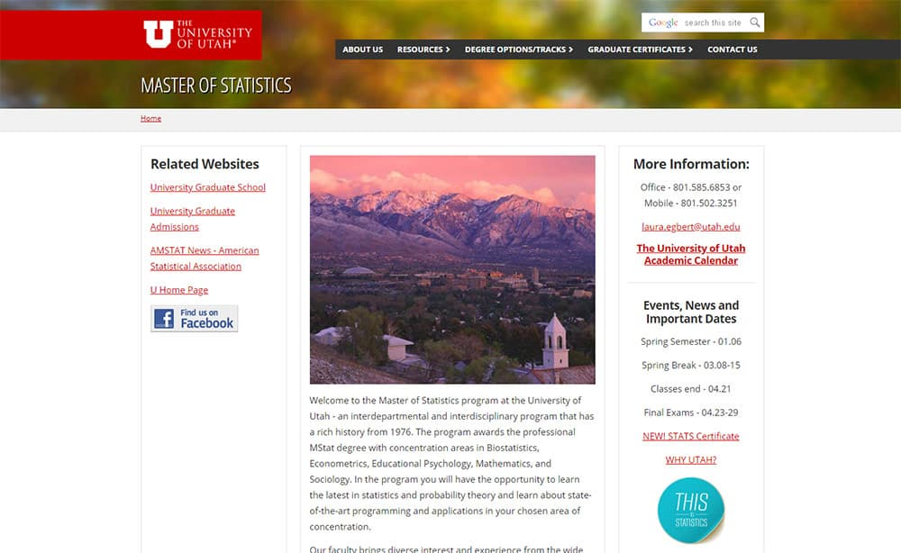

TLDR
Redesign the look and feel of the Master of Statistics homepage
Consider and study the current information architecture of the Mstat website
Take a mobile-first approach to design and layout elements
Consider user testing to find out what users are looking for and how to better present that info
Continue to conduct user test to identify new pain-points and improve on the prototypes
The Project
This was a personal project/case study to redesign the Master of Statistics website for the University of Utah.
I used other department homepages for inspiration that had newer design elements and layout. The main goal of the redesign was to take many of the links hidden in the main navigation menu (as seen in the image below of the current site homepage) and turn them into visual elements and calls-to-action to drive conversion.
I took into consideration what I thought would be the most important user needs from the navigation menu to turn into CTA elements. If I were to take on the project with the right resources, I would conduct several user tests to determine what users are looking for on the website before doing any designing. With that user information, I could better understand what users are looking for and feature those main items on the homepage as design elements.
 Current Mstat website >>This is just a high-fidelity prototype and not considered to be anything "final". I would continue user testing with this design prototype to find out if our users can find what they're looking for and identify any new pain-points of the current redesign. My goal is to always be flexible and open to new ideas and changes and to never fall in love with my work!